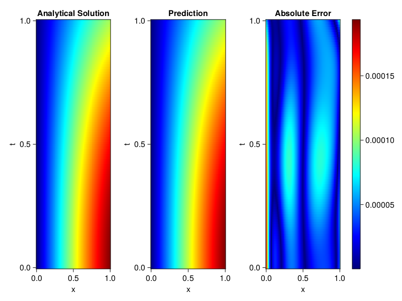
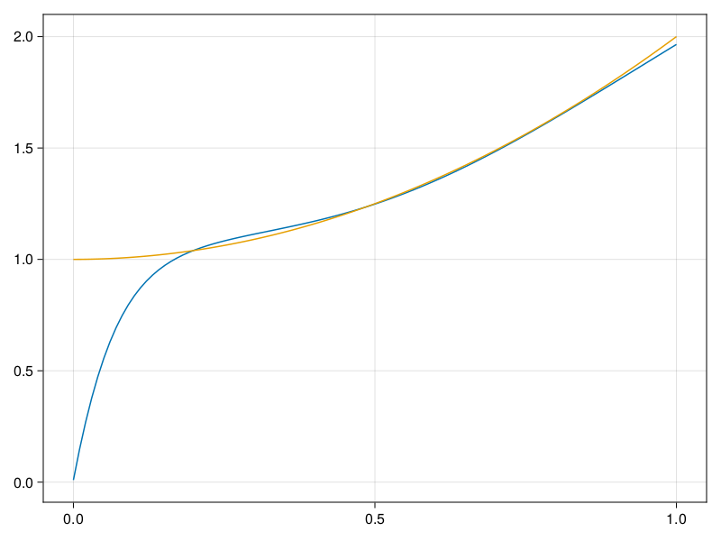

Inverse problem for the wave equation with unknown velocity field
We are going to sovle the wave equation.
using Sophon, ModelingToolkit, IntervalSets
using Optimization, OptimizationOptimJL
@parameters x, t
@variables u(..), c(..)
Dₜ = Differential(t)
Dₜ² = Differential(t)^2
Dₓ² = Differential(x)^2
s(x,t) = abs2(x) * sin(x) * cos(t)
eq = Dₜ²(u(x,t)) ~ c(x) * Dₓ²(u(x,t)) + s(x,t)
bcs = [u(x, 0) ~ sin(x),
Dₜ(u(x, 0)) ~ 0,
u(0, t) ~ 0,
u(1, t) ~ sin(1) * cos(t)]
domains = [t ∈ Interval(0.0, 1.0),
x ∈ Interval(0.0, 1.0)]
@named wave = PDESystem(eq, bcs, domains, [t,x], [u(x,t),c(x)])\[ \begin{align} \frac{\mathrm{d}^{2}}{\mathrm{d}t^{2}} u\left( x, t \right) =& c\left( x \right) \frac{\mathrm{d}^{2}}{\mathrm{d}x^{2}} u\left( x, t \right) + \cos\left( t \right) \left|x\right|^{2} \sin\left( x \right) \end{align} \]
Here the velocity field $c(x)$ is unknown, we will approximate it with a neural network.
pinn = PINN(u = FullyConnected((2,16,16,16,1), sin),
c = FullyConnected((1,16,16,1), tanh))
sampler = QuasiRandomSampler(500,100)
strategy = NonAdaptiveTraining(1, (10,10,1,1))NonAdaptiveTraining{Int64, NTuple{4, Int64}}(1, (10, 10, 1, 1))Next we generate some data of $u(x,t)$. Here we place two sensors at $x=0.1$ and $x=0.5$.
ū(x,t) = sin(x) * cos(t)
x_data = hcat(fill(0.1, 1, 50), fill(0.5, 1, 50))
t_data = repeat(range(0.0, 1.0, length = 50),2)'
input_data = [x_data; t_data]
u_data = ū.(x_data, t_data)1×100 Matrix{Float64}:
0.0998334 0.0998126 0.0997503 0.0996464 … 0.275281 0.267213 0.259035Finally we construct the inverse problem and solve it.
additional_loss(phi, θ) = sum(abs2, phi.u(input_data, θ.u) .- u_data)
prob = Sophon.discretize(wave, pinn, sampler, strategy; additional_loss=additional_loss)
@time res = Optimization.solve(prob, BFGS(), maxiters=1000)u: ComponentVector{Float64}(u = (layer_1 = (weight = [-0.3248195336695433 0.9955696091754119; -0.03319990022045297 0.9976974064237225; … ; 0.4077939435799061 -1.323167489331741; -1.171480477677793 0.48527381134717623], bias = [-0.12759626978280664; -0.17746214844723343; … ; -0.12005769008561025; -0.19212235035489325;;]), layer_2 = (weight = [-0.1869823160251763 0.3508613752302977 … 0.13423435858244512 -0.03171494004943225; -0.1881358022660271 -0.11825510105172245 … -0.575931054312028 0.4466006073327737; … ; 0.17439731403158937 -0.7328339179186383 … 0.3519917341442676 -0.6900483717496827; 0.2760113180393594 0.038202684358883986 … -0.09969856658697175 0.33930332161796417], bias = [0.0783725849524807; -0.25008698690079956; … ; -0.22120055016927542; 0.12915648058803136;;]), layer_3 = (weight = [-0.12453556565669648 0.003300609823540127 … 0.027594712311388728 -0.8085120057563331; -0.29529289399427694 0.4243897929341013 … -0.14776398696969836 -0.3274185032915964; … ; 0.024463807232379862 -0.47472716107006646 … 0.14647564982620173 -0.289603323213774; -0.10169099820748283 0.6999976131859051 … -0.02493639892077372 0.3438054600598475], bias = [-0.08667422561780719; -0.015926600854101247; … ; 0.10407510489458292; 0.09970506353681921;;]), layer_4 = (weight = [-0.4294252400542502 -0.24286528666170443 … -0.6271581570715594 -1.02110862617871], bias = [-0.029958254833835365;;])), c = (layer_1 = (weight = [2.514237802608117; -2.1789107012235998; … ; 0.8644584567165118; -0.4680713747445082;;], bias = [-0.18884822189165892; 0.16241763765189454; … ; -0.13229150646766943; 0.24051261544861854;;]), layer_2 = (weight = [0.08799862551164918 0.3208567682582587 … 0.17744614555889948 0.6494545794072586; 0.28585349904471663 -0.5027428907456769 … 0.44528586450622576 0.47123278679348496; … ; -0.5178604854793786 -0.16709279077879055 … 0.011678035913417316 -0.0543448106302076; 0.39774426597646195 0.6504756467053665 … -0.2857872244807014 -0.3812084676580284], bias = [0.02128121629409458; -0.14376754982438458; … ; -0.2679613405289258; -0.1610722916141461;;]), layer_3 = (weight = [-0.13364014634730492 0.5267048527307026 … 0.8564997477099162 0.3395294622230797], bias = [-0.4515666232984179;;])))Let's visualize the predictted solution and inferred velocity
using CairoMakie
ts = range(0, 1; length=100)
xs = range(0, 1; length=100)
u_pred = [pinn.phi.u([x, t], res.u.u)[1] for x in xs, t in ts]
c_pred = [pinn.phi.c([x], res.u.c)[1] for x in xs]
u_true = [ū(x, t) for x in xs, t in ts]
c_true = 1 .+ abs2.(xs) |> vec
axis = (xlabel="x", ylabel="t", title="Analytical Solution")
fig, ax1, hm1 = heatmap(xs, ts, u_true, axis=axis; colormap=:jet)
ax2, hm2= heatmap(fig[1, end+1], xs, ts, u_pred, axis= merge(axis, (;title = "Prediction")); colormap=:jet)
ax3, hm3 = heatmap(fig[1, end+1], xs, ts, abs.(u_true .- u_pred), axis= merge(axis, (;title = "Absolute Error")); colormap=:jet)
Colorbar(fig[:, end+1], hm3)
fig
fig, ax = lines(xs, c_pred)
lines!(ax, xs, c_true)
fig